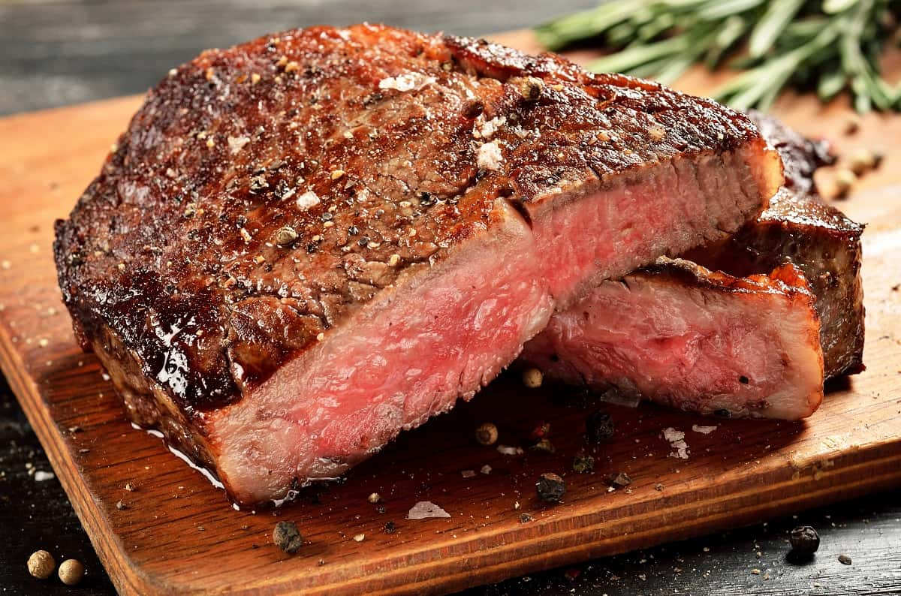

Filete asado
No importa si es rib eye, filet mignon o sirloin, aquí te explicamos cómo asar estos deliciosos cortes de carne
a la perfección
Lo has estado pensando todo el día, ya es hora de preparar ese glorioso filete de carne que espera pacientemente
por ti dentro del refrigerador.
Ingredientes
- 4 filetes de su eleccion
- Sal gruesa al gusto
- pimienta recien molida al gusto
Preparacion
Enciende la parrilla
- Para asar filetes de carne como debe ser, necesitas que tu parrilla esté a la temperatura más alta posible.
Comienza encendiendo unas 100 briquetas de carbón Original Kingsford® Charcoal en el cilindor de metal or
apilándolas. Cuando los carbones estén calientes, espárcelos en una mitad de la parrilla para crear un fuego
de dos áreas. Coloca la rejilla superior y espera a que se caliente (todos los conductos de ventilación
deben estar completamente abiertos). Vierte un poco de aceite comestible en una toalla de papel y engrasa
las rejillas utilizando unas pinzas de mango largo.
Prepara la carne
- Saca la carne del refrigerador y espera unos 30 minutos más o menos, hasta que esté a temperatura ambiente.
Elimina el exceso de grasa de la carne para evitar llamaradas y corta verticalmente la capa delgada de grasa
que rodea los filetes. Sazona la carne con sal gruesa y pimienta recién molida, por ambos lados.
Sella y voltea los filetes
- Coloca la carne en la zona más caliente de la parrilla, es decir, la que está directamente arriba de las
brasas, y deja que se selle por unos 2 o 3 minutos. Voltea el filete y sella el otro lado también por 2 o 3
minutos. Resiste la tentación de mover la carne durante el proceso de sellado, ya que esto impediría que
logres las marcas ideales de la rejilla en la carne. Baja la tapa de la parrilla para evitar llamaradas.
Muevelos al lado menos caliente
- Una vez que los filetes estén correctamente sellados, si no están cocidos al término que deseas, pásalos al
lado menos caliente de la parrilla, es decir, la zona que está más alejada de los carbones. Coloca la tapa
de la parrilla y deja que se cocinen hasta que alcancen la temperatura buscada. No necesitas voltear la
carne mientras se asa con calor indirecto.
Verifica si la carne esta lista
- Mide la temperatura de los filetes mientras estén en la parrilla, utilizando un termómetro digital para
carnes. Deja que se asen hasta alcanzar el término de cocción deseado: 130°F si la prefieres sellada por
fuera y cruda por dentro, 135°F si te gusta medio cruda en su interior, 145°F si la prefieres término medio,
150°F si la quieres tres cuartos y 160°F si comes la carne bien cocida. Toma en cuenta que los filetes se
van a seguir cocinando un poco más después de ser quitados de la parrilla, así que su temperatura subirá
unos cuantos grados una vez retirados del fuego.

Retira de la parrilla y deja reposar
- Después de remover la carne de la parrilla colócala en una tabla de cortar, cúbrela con papel de aluminio y
déjala reposar por unos 5 minutos (la temperatura seguirá subiendo unos pocos grados más mientras los jugos
asientan en la carne).